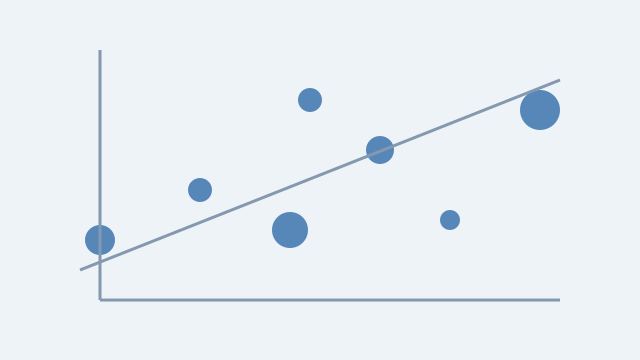
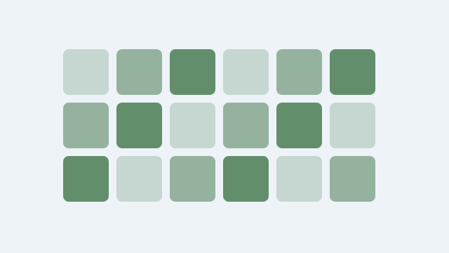
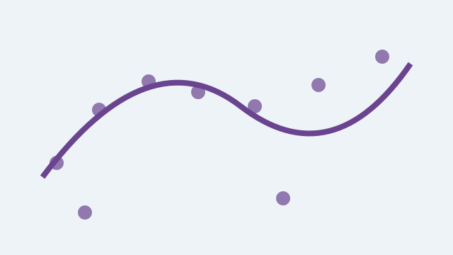

Project 1: Real-Time Radiance Fields & 3D Gaussian Splatting
Investigating novel primitive representations and GPU-accelerated rasterization techniques to render
complex dynamic 3D scenes in real time under stringent computational constraints.
Team Members & Roles:
-
Dr. Alice Smith
- Principal Investigator
- Algorithm Architecture & Funding Lead
-
Guanjun Wu
- Lead PhD Researcher
- Dynamic Scene Optimization & CUDA Kernel Developer
Key Publications:
- 3D Gaussian Splatting for Real-Time Radiance Field Rendering (SIGGRAPH 2023)
- 4D Gaussian Splatting for Real-Time Dynamic Scene Rendering (CVPR 2024)
Active

Project 2: Explainable AI & Saliency Map Evaluation
Developing theoretical frameworks and empirical sanity checks to evaluate whether post-hoc attribution
methods faithfully reflect the latent representations of vision and language architectures.
Team Members & Roles:
-
Dr. Robert Vance
- Co-Investigator
- Statistical Validation Supervisor
-
Alon Jacovi
- PhD Candidate
- Faithfulness Evaluation Metrics Specialist
Key Publications:
- Sanity Checks for Saliency Maps (NeurIPS 2018)
- Towards Faithfully Interpretable NLP Systems (ACL 2020)
Active

Project 3: Robust Losses in Adverse Neural Environments
Formulating optimization loss surfaces resilient to spatial distractors, transient occlusions, and adversarial
perturbations in multi-view visual reconstruction.
Team Members & Roles:
-
Dr. Sara Sabour
- Postdoctoral Research Fellow
- Robust Loss Formulation Lead
Key Publications:
- RobustNeRF: Ignoring Distractors with Robust Losses (CVPR 2023)
Active